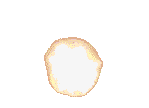
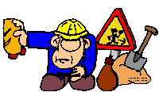
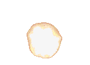
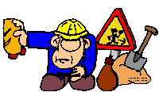
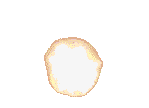
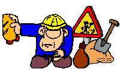
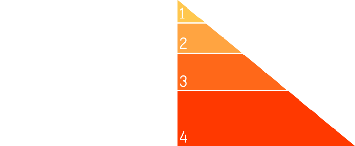

 
 
Willkommen auf meiner Webseite!!!
 Herzlichen Glückwunsch, Du bist Besucher Nr. .
Herzlichen Glückwunsch, Du bist Besucher Nr. .
Es ist jetzt Uhr


Deine Daten. Dein Netz.
IndieIndependentIndividualWeb
 
Herzlichen Glückwunsch, Du bist Besucher Nr. .
Es ist jetzt Uhr


(Bloggen ist wieder „nerdy“)
I don't care about federation,
I care about my content,
I care about my friends.
auf dem Weg ins IndieWeb
Freier Zugriff auf die Inhalte
If you can't cURL it,
it's not on the web.
„Publish on your Own Site, Syndicate Elsewhere“
„Publish Elsewhere, Syndicate to your Own Site“
POST /webmention-endpoint HTTP/1.1 Host: toms.blog Content-Type: application/x-www-form-urlencoded source=https://lotte.me/reply-to-toms-article& target=https://toms.blog/awesome-article

vom 16. bis 17. April
im Rahmen der Nürnberg Web Week